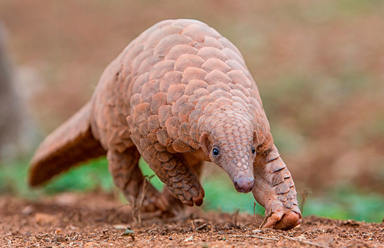

Welcome to the Pangolin Fan Club!
Hello! My name is Zon and I really love animals! I grew up with lots of pets and now have the privilege to work on a farm as a field biologist. My favorite animal is the pangolin, because they are goofy and cute. They look like little armored dinosaurs but don't have a dangerous bone in their bodies.
Pangolins are the only mammals in the world covered in scales made of keratin — the same material as your fingernails and hair. Despite their armored appearance, they are gentle, solitary insectivores that pose no threat to humans.
Sadly, pangolins are also the world's most trafficked wild mammal, with all eight species now threatened or endangered. Learn more on Wikipedia.
Use the navigation above to explore their habitat, diet, conservation status, browse the gallery, or test your pangolin knowledge with the quiz!